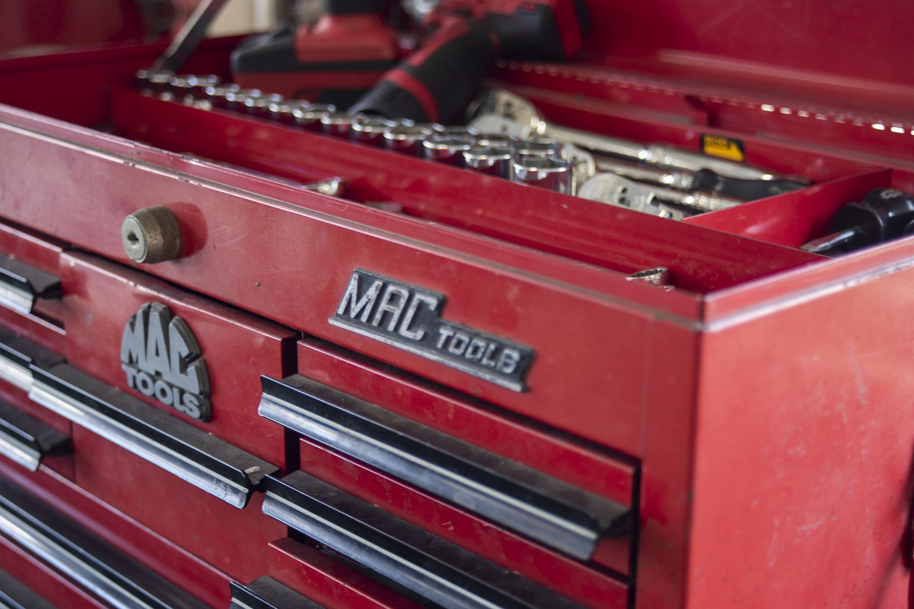
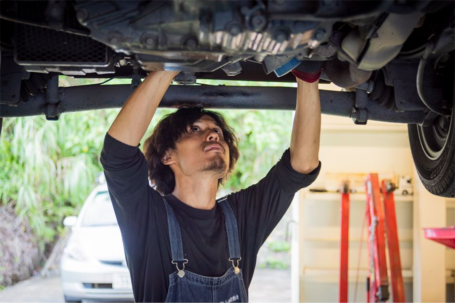
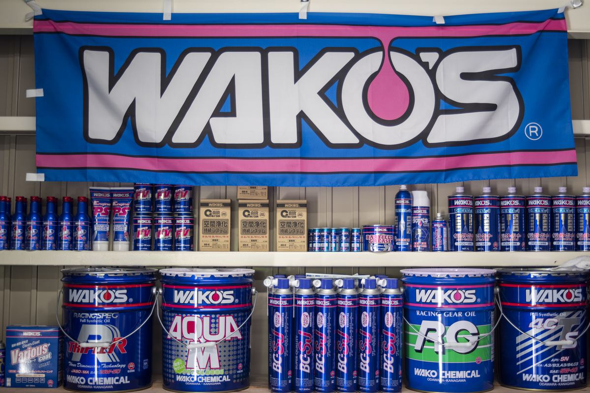

Repair & Maintenance
修理・整備
HOME ／ 修理・整備
豊富な知識と確かな技術力で修理・整備いたします！
まずはお客様の大切な車の状態をしっかりと点検し、お見積り・修理の対応いたします。当社は総合整備工場のため、複数の作業を対応まとめて出来ることも魅力の一つです。
Mechanic
整備士紹介

MECHANIC
整備士山畑 瑞貴
整備士の山畑です。
当社では、はじめにしっかりとお客様のお話をお伺いし、車の状態の点検、お見積り・修理の対応いたします。
快適なカーライフに欠かせない適切なメンテナンスで、お客様とコミュニケーションを取りながら、質の高いトータルサービスのご提案をさせて頂き、安心・安全をモットーに的確な作業でお客様をサポート致します。
また、常に工場内・事務所内の整理整頓に努め、お客様が安心して任せられる工場を目指しています。
Flow
修理の流れ
- お問い合わせ
- 入庫
- お見積もり
- 整備・修理
- お支払い
- 出庫・納車
Chemical supplies
ケミカル用品
奄美大島で唯一「WAKO'S」取り扱い店舗

FAQ
よくある質問
Q部品を持ち込んでの修理は可能ですか。
A
はい、可能です。
インターネットで購入した部品や前の車の部品を取り外して使用することも可能ですので、ご希望の方はご相談ください。
※ネット等で注文される場合は、注文前にご相談ください。
インターネットで購入した部品や前の車の部品を取り外して使用することも可能ですので、ご希望の方はご相談ください。
※ネット等で注文される場合は、注文前にご相談ください。
Q輸入車（外車）の修理は可能ですか。
A
はい、可能です。当社は、輸入車販売会社の納車前整備・修理等も行っております。
アメリカ車、イタリア車、ドイツ車の整備承ります。
アメリカ車、イタリア車、ドイツ車の整備承ります。
Q修理の対応は、どこの保険会社でも可能ですか。
A
はい、お客様が入られている保険会社がどちらであっても、保険修理を承ることが出来ますので、ご安心ください。
Q車検をお願いしたい車を家や会社まで取りに来てもらうことはできますか？
A
はい、下記のエリア内であれば対応可能です。
奄美市、龍郷町、瀬戸内町など、その他のエリアであってもお気軽にご相談ください。
奄美市、龍郷町、瀬戸内町など、その他のエリアであってもお気軽にご相談ください。
Q車検で車を預けている間、代車を借りることはできますか？
A
車をお預かりしている期間中は代車を無料貸し出しております。
ESTIMATE ON LINE
車検、いくらかかる？
LINEで30秒車検の概算見積り
友だち追加して、車の種類と年数を選ぶだけ。その場で車検費用の目安がわかります。
- STEP 1友だち追加
- STEP 2「概算見積り」をタップ
- STEP 3車の情報を選ぶだけ
友だち追加して30秒で見積る
スマホで
読み取り
読み取り
※表示されるのは概算です。正式な金額はお車を点検してからご案内します。